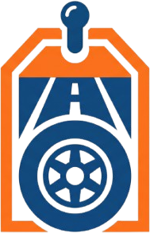

🚚'"> Восток ПрицепБолее 200 моделей: бортовые, с тентом, с крышкой, для лодок и мототехники. Поможем подобрать под вашу задачу и бюджет.
Оставьте контакт — подберём 3–5 моделей под вашу задачу и пришлём актуальные цены.
Нажимая кнопку, вы соглашаетесь с политикой обработки персональных данных.